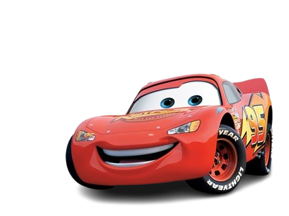

Lightning Mc Queen
Lightning McQueen is a rookie racecar in the Piston Cup series and secretly disdains his sponsor Rust-eze, hoping to be chosen by the more prestigious Dinoco team. Initially ungrateful,obnoxious, selfish, and sarcastic, Lightning believes that he doesn't need a crew chief or muchhelp from his pit crew to win races.